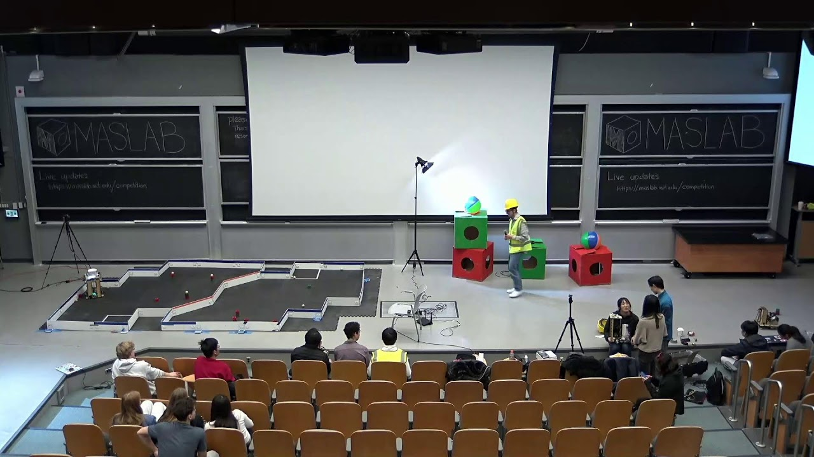
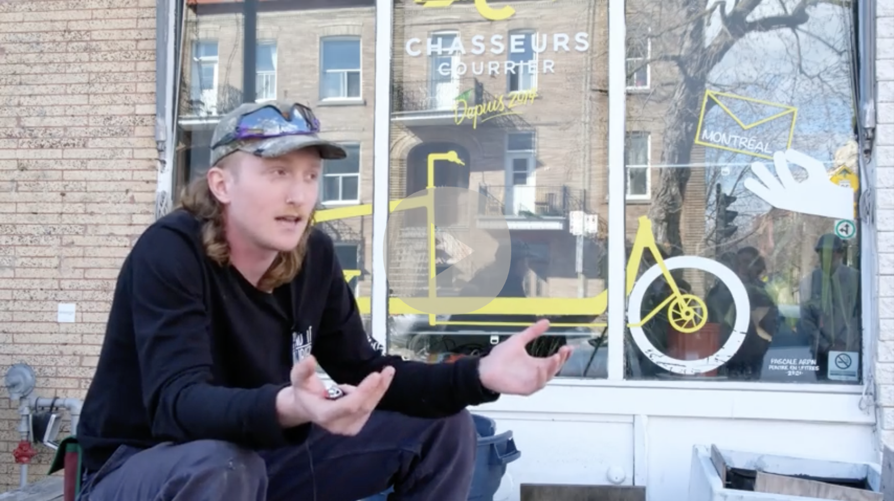

I like to learn stuff and make things, but I can't tell you why [883].
Here are some things I've done.
Designed, simulated, and fabricated three 2.45 GHz microstrip patch antennas using FDTD and HFSS, achieving return loss below −15 dB and axial ratios of 3.3–4.0 dB for circularly polarized designs.
Developed and evaluated three personalized news recommendation algorithms using article embeddings and the MIND dataset, finding that diversity-aware recommendations reduced echo-chamber effects across 583 simulated users.

Built and programmed an autonomous robot that detected and collected blocks, advancing to the quarterfinals of the 2025 MIT MASLAB competition.

A 20-minute documentary on the Cargo Bike Courier System in Montreal, Canada.